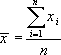
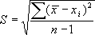
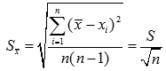

Ваша приборная погрешность:
Приборная погрешность = {{ new_instrument_error }}
Коэффициенты:
tP, N Стьюдента : {{ tpn }}
bP, N для расчета доверительной погрешности : {{ bpn }}
uP, N для проверки результатов наблюдения : {{ upn }}
vP, N для проверки грубых погрешностей : {{ vpn }}
Среднее значение из n переменных:
 = {{ average }}
Размах выборки:
R = {{ range }}
СКО и СКО среднего:

 = {{ SKOS }}
Случайная погрешность по коэффициенту Стьюдента:
Δx = tpn*Sk = {{ random_error }}
Случайная погрешность по размаху выборки:
Δx = bpn*R = {{ range_error }}
Итоговая погрешность:
Полная погрешность = {{ complete_error }}
Относительная погрешность = {{ relative_error }}
= {{ average }} +- {{ complete_error }}
Created by Abu